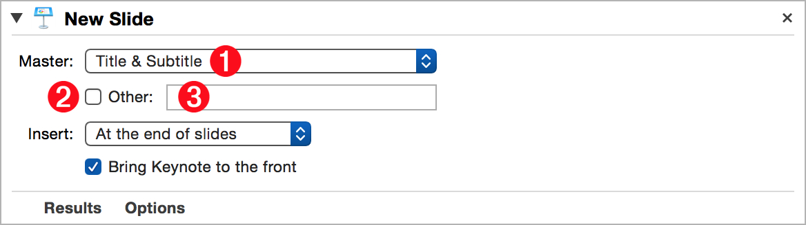
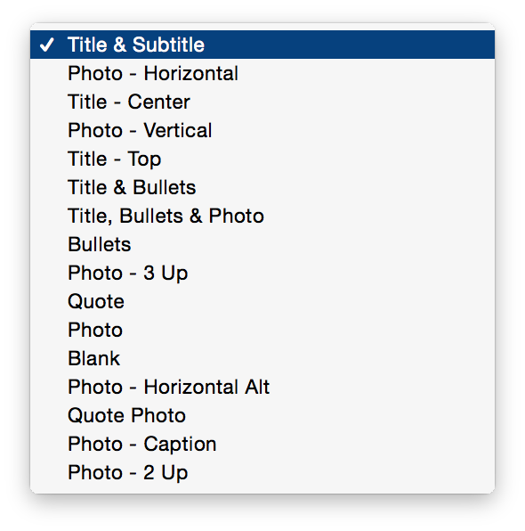
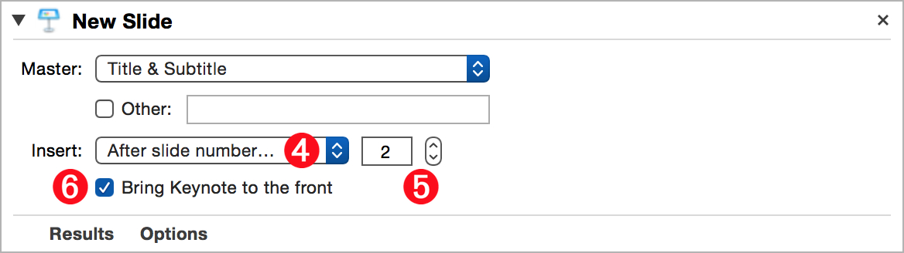
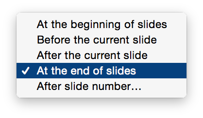

The essential action for constructing the content of a presentation, this action will generate a new slide, based on a specified master slide, inserted into the slide deck at a specified location.
The Action Information
| Input: | An AppleScript reference to the document in which a new slide will be added. NOTE:
|
| Output: | An AppleScript reference to the created slide |
| Parameters: | User-settable parameters include:
|
| Related: | Other actions that often precede this action:
|
| Related: | Other actions that often follow this action:
|
The Action Interface

1 Master Slides menu • Select a master slide from this menu (⬇ see below ) to be used as the base slide for the newly created slide.

2 Use Custom Master checkbox • If you want to use a custom master slide as the base slide for the newly created slide, select this checkbox and enter the name of the custom master slide into the corresponding text input: 3 (⬆ see above )
3 Custom Master Slide title • (⬆ see above ) Enter the exact name of the custom master slide into this text field.

4 Insertion Location menu • (⬆ see above ) This popup menu displays locations within the slide deck into which the newly created slide is inserted (⬇ see below )

5 Slide Number selector • When the “After slide number…” menu option is selected, the text input field and related stepper control become visible (⬆ see above ) Select the number of the slide after which the new slide will be inserted.
6 Activate Keynote checkbox • Select this checkbox to have Keynote move to the front of open applications when this action is executed.